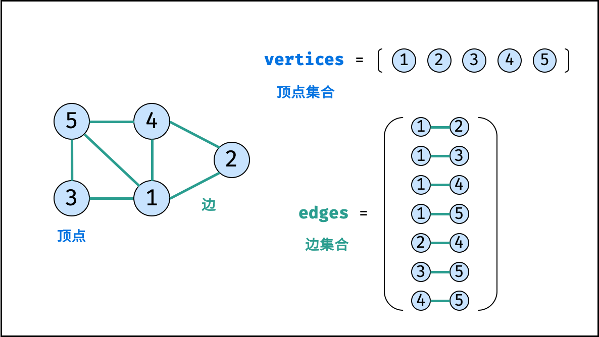
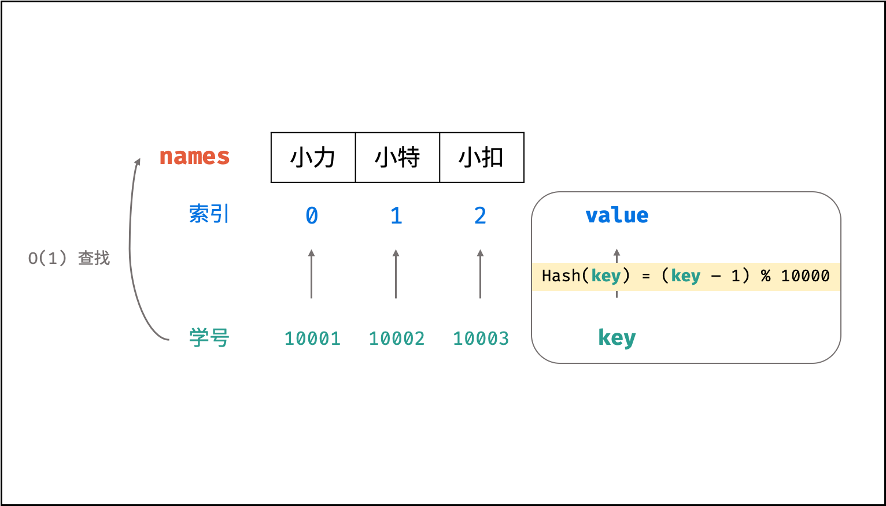
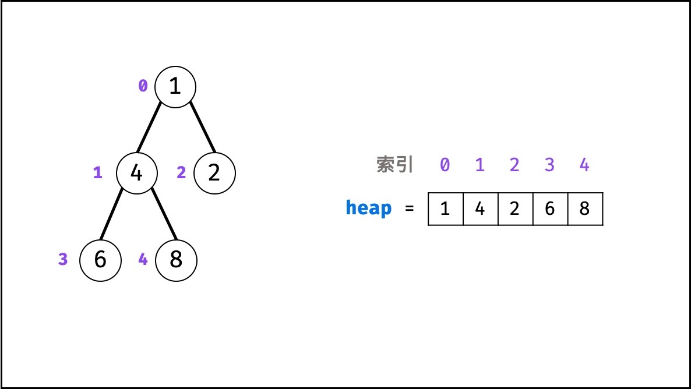

# C++ 常见的数据结构
# 数组
数组是将相同类型的元素存储于连续内存空间的数据结构，其长度不可变。
如下图所示，构建此数组需要在初始化时给定长度，并对数组每个索引元素赋值，代码如下：
// 初始化一个长度为 5 的数组 array
int array[5];
// 元素赋值
array[0] = 2;
array[1] = 3;
array[2] = 1;
array[3] = 0;
array[4] = 2;
或者可以使用直接赋值的初始化方式，代码如下：
int array[] = {2, 3, 1, 0, 2};
「可变数组」是经常使用的数据结构，其基于数组和扩容机制实现，相比普通数组更加灵活。常用操作有：访问元素、添加元素、删除元素。
// 初始化可变数组
vector<int> array;
// 向尾部添加元素
array.push_back(2);
array.push_back(3);
array.push_back(1);
array.push_back(0);
array.push_back(2);
# 链表
链表以节点为单位，每个元素都是一个独立对象，在内存空间的存储是非连续的。链表的节点对象具有两个成员变量：「值 val 」，「后继节点引用 next 」 。
struct ListNode {
int val; // 节点值
ListNode *next; // 后继节点引用
ListNode(int x) : val(x), next(NULL) {}
};
如下图所示，建立此链表需要实例化每个节点，并构建各节点的引用指向。
// 实例化节点
ListNode *n1 = new ListNode(4); // 节点 head
ListNode *n2 = new ListNode(5);
ListNode *n3 = new ListNode(1);
// 构建引用指向
n1->next = n2;
n2->next = n3;
# 栈
栈是一种具有 「先入后出」 特点的抽象数据结构，可使用数组或链表实现。
stack<int> stk;
如下图所示，通过常用操作「入栈 push() 」,「出栈 pop() 」，展示了栈的先入后出特性。
stk.push(1); // 元素 1 入栈
stk.push(2); // 元素 2 入栈
stk.pop(); // 出栈 -> 元素 2
stk.pop(); // 出栈 -> 元素 1
# 队列
队列是一种具有 「先入先出」 特点的抽象数据结构，可使用链表实现。
queue<int> que;
如下图所示，通过常用操作「入队 push() 」,「出队 pop() 」，展示了队列的先入先出特性。
que.push(1); // 元素 1 入队
que.push(2); // 元素 2 入队
que.pop(); // 出队 -> 元素 1
que.pop(); // 出队 -> 元素 2
# 树
树是一种非线性数据结构，根据子节点数量可分为 「二叉树」 和 「多叉树」，最顶层的节点称为「根节点 root」。以二叉树为例，每个节点包含三个成员变量：「值 val」、「左子节点 left」、「右子节点 right」 。
struct TreeNode {
int val; // 节点值
TreeNode *left; // 左子节点
TreeNode *right; // 右子节点
TreeNode(int x) : val(x), left(NULL), right(NULL) {}
};
如下图所示，建立此二叉树需要实例化每个节点，并构建各节点的引用指向。
// 初始化节点
TreeNode *n1 = new TreeNode(3); // 根节点 root
TreeNode *n2 = new TreeNode(4);
TreeNode *n3 = new TreeNode(5);
TreeNode *n4 = new TreeNode(1);
TreeNode *n5 = new TreeNode(2);
// 构建引用指向
n1->left = n2;
n1->right = n3;
n2->left = n4;
n2->right = n5;
# 图
图是一种非线性数据结构，由「节点（顶点）vertex」和「边 edge」组成，每条边连接一对顶点。根据边的方向有无，图可分为「有向图」和「无向图」。本文 以无向图为例 开展介绍。
如下图所示，此无向图的 顶点 和 边 集合分别为：
-
顶点集合： vertices =
-
边集合： edges = {(1, 2), (1, 3), (1, 4), (1, 5), (2, 4), (3, 5), (4, 5)

表示图的方法通常有两种：
-
邻接矩阵： 使用数组 存储顶点，邻接矩阵 存储边； 代表节点 和节点 之间是否有边。
int vertices[5] = {1, 2, 3, 4, 5}; int edges[5][5] = {{0, 1, 1, 1, 1}, {1, 0, 0, 1, 0}, {1, 0, 0, 0, 1}, {1, 1, 0, 0, 1}, {1, 0, 1, 1, 0}}; -
邻接表： 使用数组 存储顶点，邻接表 存储边。 为一个二维容器，第一维 代表顶点索引，第二维 存储此顶点对应的边集和；例如 代表 的边集合为
int vertices[5] = {1, 2, 3, 4, 5}; vector<vector<int>> edges; vector<int> edge_1 = {1, 2, 3, 4}; vector<int> edge_2 = {0, 3}; vector<int> edge_3 = {0, 4}; vector<int> edge_4 = {0, 1, 4}; vector<int> edge_5 = {0, 2, 3}; edges.push_back(edge_1); edges.push_back(edge_2); edges.push_back(edge_3); edges.push_back(edge_4); edges.push_back(edge_5);
邻接矩阵 VS 邻接表 ：
邻接矩阵的大小只与节点数量有关，即 ，其中 为节点数量。因此，当边数量明显少于节点数量时，使用邻接矩阵存储图会造成较大的内存浪费。
因此，邻接表 适合存储稀疏图（顶点较多、边较少）； 邻接矩阵 适合存储稠密图（顶点较少、边较多）。
# 散列表
散列表是一种非线性数据结构，通过利用 Hash 函数将指定的「键 key 」映射至对应的「值 value 」，以实现高效的元素查找。
设想一个简单场景：小力、小特、小扣的学号分别为 10001, 10002, 10003 。
现需求从「姓名」查找「学号」。
则可通过建立姓名为 key ，学号为 value 的散列表实现此需求，代码如下：
// 初始化散列表
unordered_map<string, int> dic;
// 添加 key -> value 键值对
dic["小力"] = 10001;
dic["小特"] = 10002;
dic["小扣"] = 10003;
// 从姓名查找学号
dic.find("小力")->second; // -> 10001
dic.find("小特")->second; // -> 10002
dic.find("小扣")->second; // -> 10003

# Hash 函数设计示例 ：
假设需求：从「学号」查找「姓名」。
将三人的姓名存储至以下数组中，则各姓名在数组中的索引分别为 0, 1, 2 。
string names[] = { "小力", "小特", "小扣" };
此时，我们构造一个简单的 Hash 函数（ %% 为取余符号 ），公式和封装函数如下所示：
int hash(int id){
int index = (id - 1) % 10000;
return index; }
则我们构建了以学号为 key 、姓名对应的数组索引为 value 的散列表。利用此 Hash 函数，则可在 时间复杂度下通过学号查找到对应姓名，即：
names[hash(10001)] // 小力
names[hash(10002)] // 小特
names[hash(10003)] // 小扣

以上设计只适用于此示例，实际的 Hash 函数需保证低碰撞率、 高鲁棒性等，以适用于各类数据和场景。
# 堆
堆是一种基于「完全二叉树」的数据结构，可使用数组实现。以堆为原理的排序算法称为「堆排序」，基于堆实现的数据结构为「优先队列」。堆分为「大顶堆」和「小顶堆」，大（小）顶堆：任意节点的值不大于（小于）其父节点的值。
完全二叉树定义： 设二叉树深度为 ，若二叉树除第 层外的其它各层（第 至 层）的节点达到最大个数，且处于第 层的节点都连续集中在最左边，则称此二叉树为完全二叉树。
如下图所示，为包含 1, 4, 2, 6, 8 元素的小顶堆。将堆（完全二叉树）中的结点按层编号，即可映射到右边的数组存储形式。

通过使用「优先队列」的「压入 push() 」和「弹出 pop() 」操作，即可完成堆排序，实现代码如下：
// 初始化小顶堆
priority_queue<int, vector<int>, greater<int>> heap;
// 元素入堆
heap.push(1);
heap.push(4);
heap.push(2);
heap.push(6);
heap.push(8);
// 元素出堆（从小到大）
heap.pop(); // -> 1
heap.pop(); // -> 2
heap.pop(); // -> 4
heap.pop(); // -> 6
heap.pop(); // -> 8